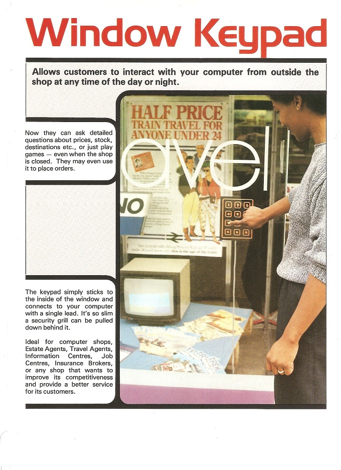

Binstead designs
The Original Inventors of Projected Capacitance Technology
Owners and Licensors of Projected Capacitance Intellectual Property
('ip')
_____( Touchscreen and proximity sensing technology )
What is Projected Capacitance
also known as:
Projective Capacitive or Dynamic Capacitance
Evolution of Projected Capacitance
From 1983 ____ 2016
Advantages/Applications
Advantages of Projected Capacitance
Unique Applications of Projected Capacitance
'ip'
Patents, Copyright and Know-how
How can I get hold of this technology?
"Joint Venture"
"Through a Licence"
Through Contract manufacture
- see -
Zytronic Displays
Visual Planet
Binstead Designs
CONTACT US
